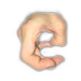
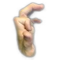
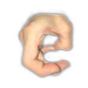
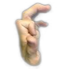
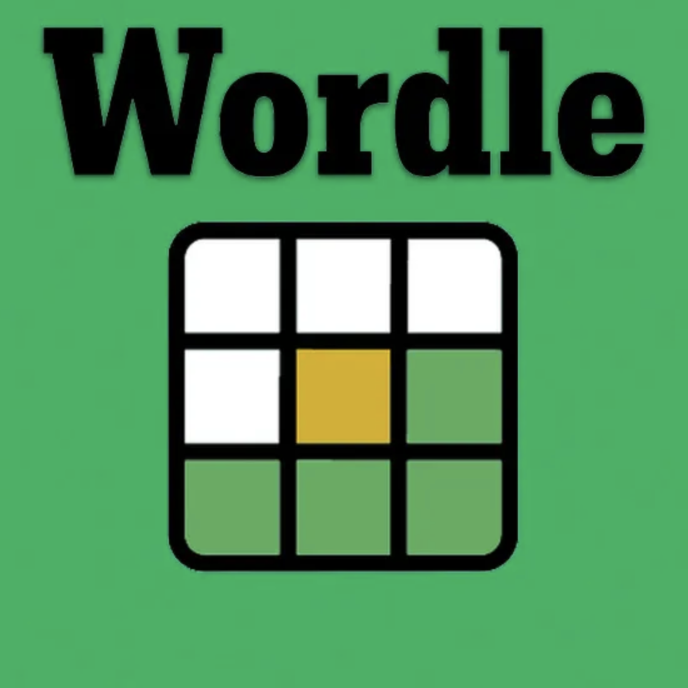

Wordle Clone
May 2024
I wanted to create a Wordle clone to understand the difficulties that come with making a simple word game. Plus I love Wordle. My clone is played only through the terminal and the solution word is determined in the code, a random word chosen from a list of approved 5-letter possible solution words. As each guess is made, the word is returned to the player - a letter made lowercase if it exists within the solution and uppercase if the placement of the letter is correct, otherwise the letter is discarded.
The biggest challenge was accounting for guess words and solution words with multiple of the same letter. A guess of 'SHEEN' on 'SHINE' returns both the 'e's as lowercase since simply checking the solution for the presence of each letter does not consider quantity. Instead, I updated the game to account for these cases by counting each appearance of each letter within the solution word. If there are repeated letter, it is noted and also how many of each letter appears. When the guess word is being checked against the solution repeated letters will be noted and given a counter which, when it reaches 0, will no longer accept matching letters as being a part of the solution.